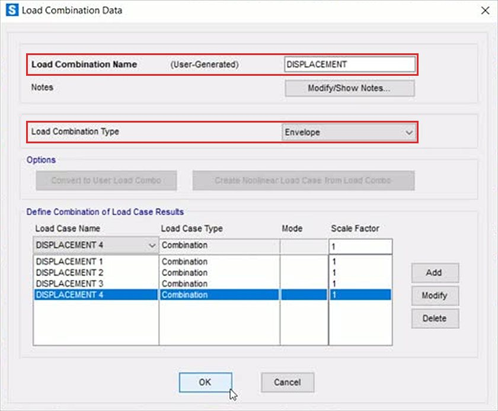

Bài 14.3. Thực hành SAP2000 Serviceability checks in SAP2000
SAP2000 kiểm tra được độ võng cấu kiện và cho chuyển vị nút, nhưng kết quả chỉ đúng khi tổ hợp, design member và độ cứng được khai báo đúng.
- Khai báo tổ hợp
SLS_, chọn đúng mục Deflection, gộp design member cho kèo. - Đọc chuyển vị ngang với độ cứng danh nghĩa và kiểm tra nhanh bằng tay.
1. Tình huống
Mô hình SAP2000 của nhà máy DNP dùng Direct Analysis với Tau-b. Bảng Joint Displacements cho chuyển vị đỉnh cột 98 mm dưới tổ hợp SLS_W, vượt $H/100$ = 90 mm. Trước khi tăng tiết diện cột, kỹ sư kiểm tra lại: chuyển vị này có được tính với độ cứng đã giảm $0{,}8EI$ không?
2. Ví dụ tính toán
Khung cổng chân khớp, cột cao $H$ = 7,0 m, $EI_c$ không đổi, kèo cứng hơn nhiều. Lực ngang tại đỉnh do gió 10 năm (0,44W) quy về $P$ = 20 kN mỗi khung. Chuyển vị khung chân khớp, xà cứng vô cùng:
Lời giải
Ví dụ dùng $I$ của H500×250×8×12. Kết quả nhỏ hơn $H/100$ = 70 mm và nhỏ hơn cả 30,6 mm của TCVN. Thực tế kèo không cứng vô cùng nên $\Delta$ lớn hơn khoảng 1,5–3 lần, và nên lấy số liệu từ SAP2000.
3. Thực hành SAP2000
Thực hiện trong SAP2000
Kiểm tra độ võng cấu kiện
- Định nghĩa tổ hợp sử dụng (Define → Load Combinations): các tổ hợp ở Bảng 14.2, đặt tên có tiền tố
SLS_. - Design → Steel Frame Design → Select Design Combinations → Deflection: chỉ chọn các tổ hợp
SLS_. Không để mặc định, vì SAP sẽ lấy cả tổ hợp cường độ. - Preferences (Chương 12): khai báo giới hạn chung, ví dụ DL 120, SDL+LL 120, LL 180, Total 120.
- Overwrites cho từng nhóm cấu kiện:
- Deflection Check Type: Ratio, Absolute hoặc Both.
- Giới hạn riêng cho xà gồ, dầm tường.
- Camber nếu kèo có độ vồng chế tạo.
- Chiều dài tính võng. SAP tính võng tương đối giữa hai đầu phần tử thiết kế (design member). Với kèo chia nhiều đoạn, phải gộp thành một design member (Assign → Frame → Automatic Frame Subdivide, hoặc khai báo Design Lengths). Nếu không, SAP chỉ tính võng của từng đoạn ngắn và kết quả sẽ sai rất nhiều.
Với kèo khung cổng, độ võng $L/180$ hay $L/300$ được hiểu là độ võng tương đối của đỉnh mái so với hai đầu cột. Cách SAP2000 tính theo design member (đường nối hai đầu) phù hợp khi một design member là toàn bộ nửa kèo hoặc cả kèo. Cách an toàn là đọc chuyển vị $U_3$ tại đỉnh mái và tại đỉnh cột trong Joint Displacements rồi tự trừ.
Kiểm tra chuyển vị ngang khung
- Display → Show Tables → Analysis Results → Joint Displacements, lọc các nút đỉnh cột và cao trình vai cột, chọn tổ hợp
SLS_W.... - Lấy $U_1$ (hoặc $U_2$) lớn nhất và so với $H/100$ (hoặc giới hạn đã chọn). Với nhà có cầu trục, lấy thêm tại cao trình ray dưới tải ngang cầu trục, không kể gió.
- Khi đánh giá chuyển vị ngang không dùng mô hình có giảm độ cứng (Direct Analysis, $0{,}8EI$; xem Chương 11). DM dùng độ cứng giảm để kiểm tra cường độ. Với điều kiện sử dụng, AISC Chú giải Chương L cho phép dùng độ cứng danh nghĩa. Trong SAP, nếu đã bật Tau-b cho thiết kế thì chạy thêm một trường hợp phân tích riêng (hoặc một mô hình bản sao) với Stiffness Reduction = None để đọc chuyển vị.
- Define
- Load Combinations
- Add New Combo
- Load Combination Type = Envelope
- thêm DISPLACEMENT 1…4
- OK

4. Lỗi thường gặp
- Để SAP lấy mặc định các tổ hợp cường độ cho kiểm tra võng: võng quá lớn, báo "không đạt" sai.
- Kèo chia nhiều phần tử nhưng không gộp design member: SAP chỉ tính võng trên từng đoạn ngắn, luôn "đạt" dù kèo võng lớn.
5. Luyện tập
Khi đọc chuyển vị ngang để kiểm tra điều kiện sử dụng trong mô hình đã dùng Direct Analysis, cần:
Gợi ý
Độ cứng giảm của DM chỉ dùng cho kiểm tra cường độ.
Lời giải
AISC Chú giải Chương L cho phép dùng độ cứng danh nghĩa khi kiểm tra điều kiện sử dụng → chạy trường hợp riêng không giảm độ cứng.
Làm lại Ví dụ 14.1 với $P$ = 15 kN, $H$ = 8,0 m, cùng cột H500×250×8×12 ($I = 42\,919\times10^4$ mm⁴, $E = 2{,}0\times10^5$ MPa). Tính $\Delta$.
Gợi ý
$\Delta = PH^3/(6EI_c)$, đổi ra N và mm.
Lời giải
$\Delta = 15\,000 \times 8000^3/(6 \times 2{,}0\times10^5 \times 4{,}2919\times10^8) = 14{,}9$ mm.
Kèo nhịp 54 m của nhà máy DNP. Dưới tổ hợp SLS_Lr, Joint Displacements cho $U_3$ tại đỉnh mái = −185 mm, tại hai đỉnh cột = −12 mm. Tính tỷ số độ võng tương đối so với giới hạn $L/180$.
Gợi ý
Võng tương đối = $U_3$ đỉnh mái − $U_3$ đỉnh cột.
Lời giải
$\Delta = 185 - 12 = 173$ mm; $L/180 = 54\,000/180 = 300$ mm; tỷ số $173/300 = 0{,}577$ → đạt.
- Tổ hợp
SLS_riêng, chọn đúng ở Select Design Combinations → Deflection. - Gộp kèo thành một design member, hoặc tự trừ $U_3$ đỉnh mái với đỉnh cột.
- Chuyển vị ngang đọc với độ cứng danh nghĩa; công thức tay $\Delta = PH^3/(6EI_c)$ chỉ là cận dưới.